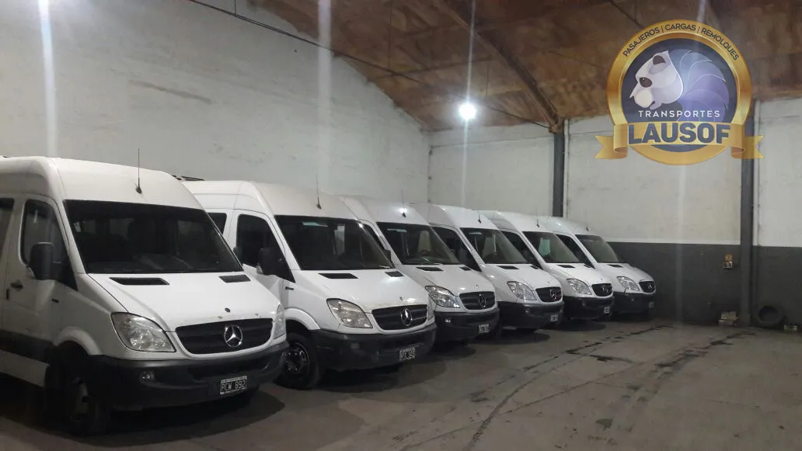
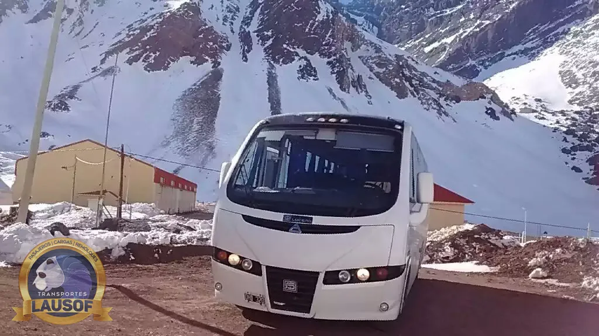

Traslados corporativos
Traslados corporativos en Salta, Jujuy y Tucumán
Traslados puntuales para empresas en combis de 19+1 plazas con chofer profesional: congresos, eventos corporativos, comitivas y viajes interprovinciales por el NOA, con una sola persona a cargo de toda la operación.
El servicio
Combis con chofer para congresos, eventos y comitivas
Movemos pasajeros por el NOA desde 2010. Cuando el traslado es puntual — un congreso, una visita, una delegación que cruza de provincia — armamos el viaje completo: unidad, chofer y recorrido, con horarios comprometidos de antemano.
Traslado de asistentes entre hoteles, sedes y cenas del evento, coordinado con la agenda de la organización.
Lanzamientos, capacitaciones y fiestas de fin de año: el grupo completo llega y vuelve en la misma unidad.
Delegaciones que visitan Salta o recorren varias ciudades: la combi queda a disposición durante toda la agenda.
Recepción del grupo y traslados durante toda la estadía, con un solo interlocutor para los cambios de agenda.
Viajes interprovinciales con habilitación CNRT: cruzar de provincia con la documentación en regla.
Salida temprana, jornada en destino y regreso: el chofer espera y el grupo no depende de horarios de terceros.
¿Buscás un traslado diario de personal — recorridos fijos a obras, clínicas o plantas? Ese es otro servicio nuestro: mirá transporte de personal en Salta.
Las unidades
Combis 19+1 mantenidas en taller propio
Las combis se revisan y se reparan con nuestro propio equipo mecánico, y los choferes conocen las rutas del NOA de memoria: la Cornisa, la subida a la Puna, la ruta a Tucumán.



Cómo trabajamos
Una operación con un solo responsable
Hablás siempre con la misma persona, desde la cotización hasta el regreso del grupo. Sin call center.
En eventos y comitivas, la unidad puede quedar a disposición del grupo durante toda la jornada o la estadía.
Habilitación CNRT N.º 60284 para cruzar de provincia con la documentación en regla.
Licencia habilitante, psicofísico y ART al día.
GPS en las unidades en servicio: cada viaje queda documentado.
Para tu área de compras
Por qué contratar una empresa habilitada
Un traslado interprovincial exige más que una combi: exige la habilitación para cruzar de provincia. Trabajamos con habilitación CNRT interjurisdiccional vigente, seguro de pasajeros y choferes con licencia habilitante, psicofísico y ART al día — documentación que presentamos cuando el área de compras o de seguridad e higiene la pide.
Somos Lausof S.R.L., CUIT 30-71146774-9, y emitimos factura A: el alta de proveedor sale sin vueltas. Si compras necesita algún dato más, escribinos a contacto@lausof.com.
Preguntas frecuentes
Lo que nos preguntan antes de contratar
¿Qué datos necesitan para cotizar?
La fecha, cuántas personas viajan, el punto de salida y el destino, y si el chofer queda a disposición o es solo ida y vuelta. Con eso te respondemos con la cotización en el día.
¿El chofer queda a disposición durante el evento?
Sí. En congresos, comitivas y visitas la unidad puede quedar a disposición del grupo durante la jornada o la estadía completa, con los traslados intermedios incluidos en la cotización.
¿Hacen viajes a Jujuy o Tucumán en el día?
Sí. Tenemos habilitación CNRT interjurisdiccional, así que armamos viajes de ida y vuelta en el día entre Salta, Jujuy y Tucumán, con el chofer esperando al grupo en destino.
¿Emiten factura A?
Sí. Somos Lausof S.R.L., CUIT 30-71146774-9, y emitimos factura A.
¿Tenés un evento o una comitiva por delante?
Contanos la fecha, cuántas personas viajan y el recorrido. Te respondemos con la cotización en el día.